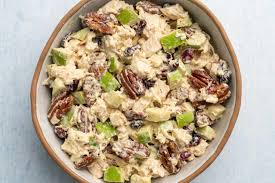

Pecan Chicken Salad

Description
Chicken pecan salad is a delightful blend of tender, grilled chicken, crunchy pecans, crisp greens, and a variety of fresh vegetables. This salad is tossed with a tangy and sweet dressing, often made with a hint of honey and mustard, adding a burst of flavor. The combination of juicy chicken and the nutty crunch of pecans creates a satisfying and nutritious meal that's perfect for lunch or dinner.
Ingredients
- ½ cup mayonnaise
- ½ cup plain Greek yogurt
- 2 teaspoons white wine vinegar
- ½ teaspoon garlic powder
- ¼ teaspoon dried thyme
- 1/2 teaspoon Park Hill maple pepper (such as Savory Spice Shop)
- 2 cups chopped cooked chicken
- 2 stalks celery, sliced
- ⅓ cup chopped toasted pecans
- 2 tablespoons minced red onion
Steps
- Mix mayonnaise, Greek yogurt, vinegar, garlic powder, thyme, and maple pepper together in a bowl until well combined. Add chicken, celery, pecans, and red onion; stir well to incorporate.
- Serve immediately or refrigerate for up to 3 days.